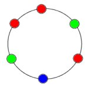
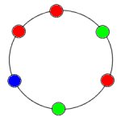
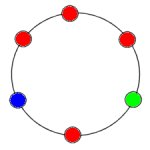
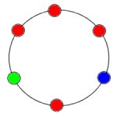

Puzzle 28: Perlen-Armband
Man hat genügend viele Perlen in drei Farben zur Verfügung, aus denen Armbänder mit je 6 Perlen
hergestellt werden. Es müssen nicht alle drei Farben verwendet werden, d.h. es gibt z.B. auch
Armbänder mit sechs Perlen der gleichen Farbe. Ein derartiges Armband hat keinen Anfang und kein Ende.
Wie viele verschiedene Armbänder gibt es?
Beispiel 1: Die folgenden zwei Armbänder sind verschieden.


Beispiel 2: Die folgenden zwei Armbänder sind identisch!


©1997 - 2026 www.mathematik.ch |🔍